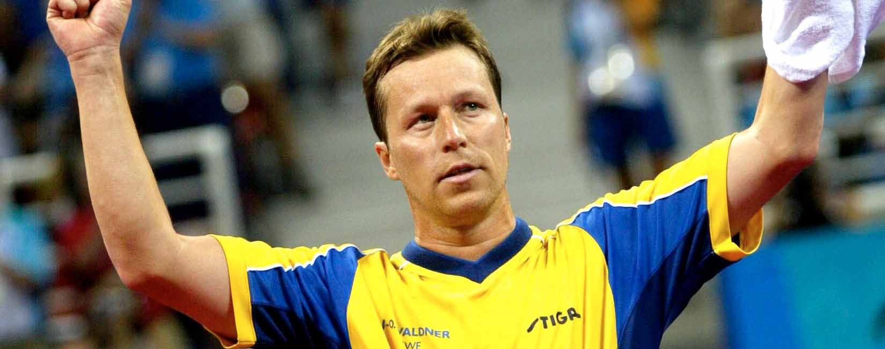

J-O Waldner
Det evigt gröna trädet
Biografi

Jan-Ove Waldner är son till Åke och Marianne Waldner. Han har en bror, Kjell-Åke.[5] Hans talang för bordtennis upptäcktes när han var fem år av föräldrarna, och vid sex års ålder började han spela i en klubb. Som ungdom åkte han på träningsläger till Kina, och ska ha blivit mycket inspirerad av kinesernas engagemang för sporten.
Klubbar
- 1971-1984 - Stockholms Spårvägars GoIF (Sverige)
- 1984-1987 - ATSV Saarbrucken (Tyskland)
- 1987-1991 - Stockholms Spårvägars GoIF (Sverige)
- 1991-1995 - Ängby SK (Sverige)
- 1995-2003 - Kalmar BTK (Sverige)
- 2003-2005 - SV Weru Pluderhausen (Tyskland)
- 2005-2012 - TTC Röhn-Sprudel Fulda-Maberxell (Tyskland)
- 2012-2016 - Spårvägens BTK (Sverige)